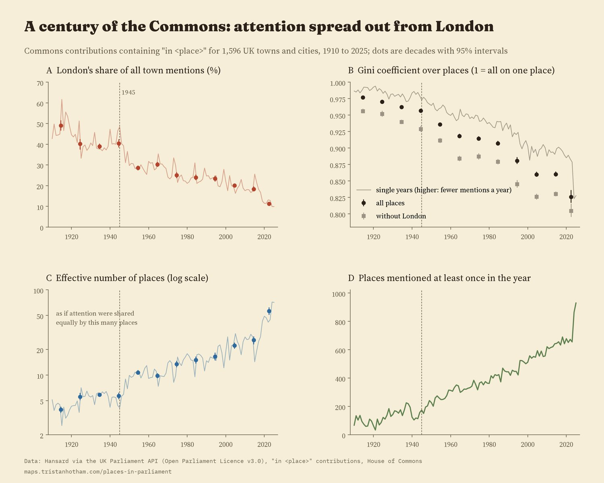
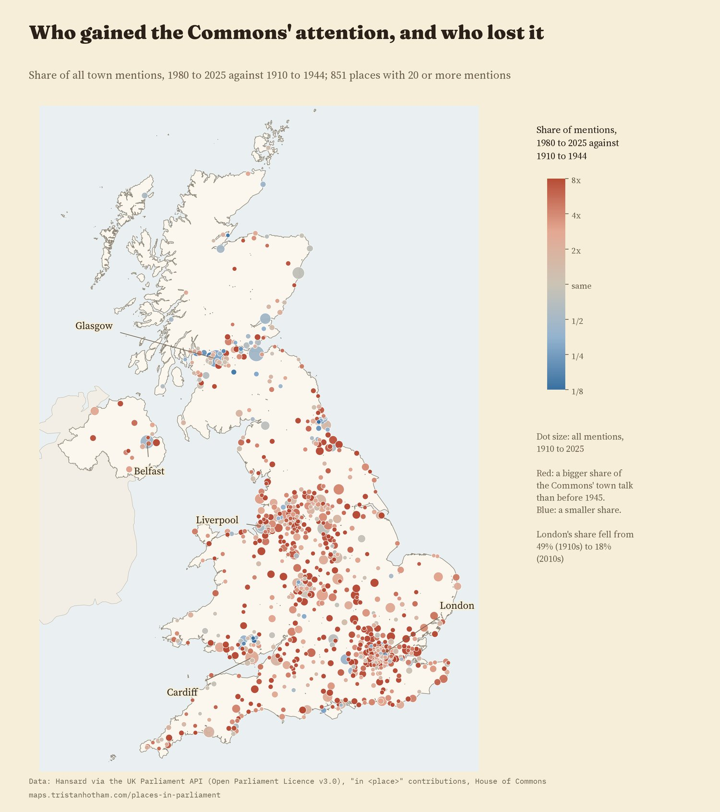
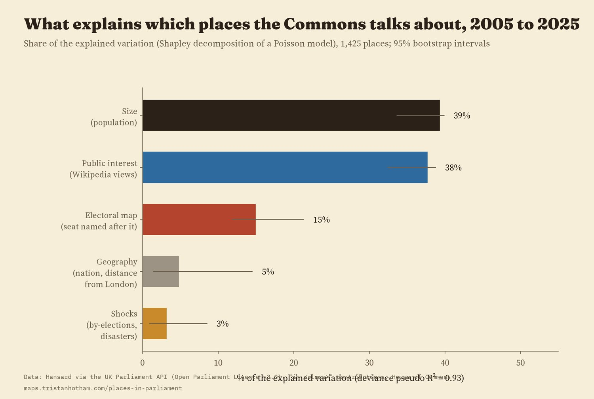
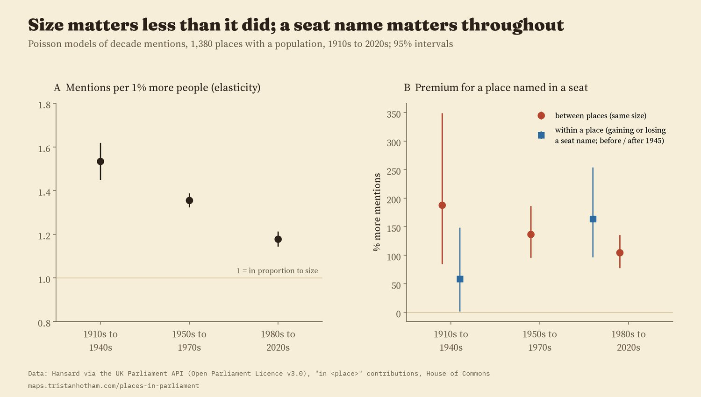
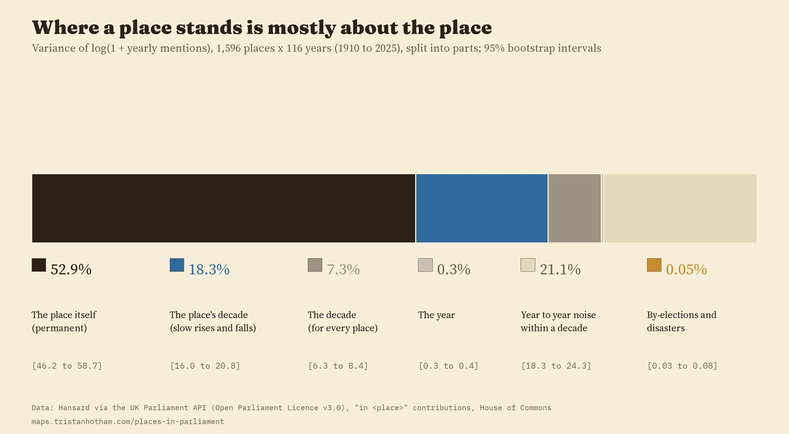
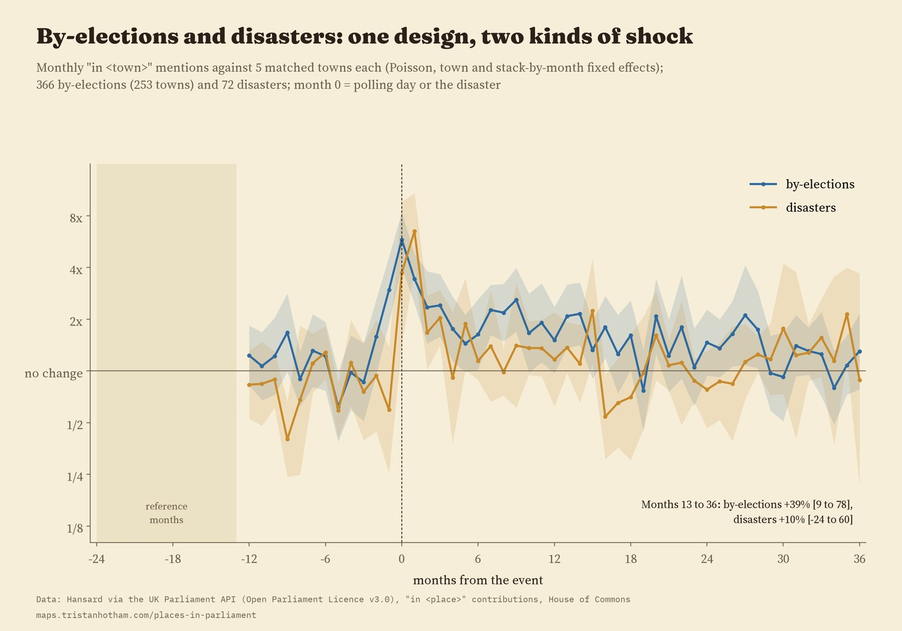

1,596 UK towns and cities, sized by how often the House of Commons said "in" their name in the decade on the slider. Colour shows whether a place's share of these mentions grew or shrank between 1910 to 1944 and 1980 to 2025. Rings mark by-election towns, gold triangles disasters. Tap a dot for its century.
Which parts of the country does Parliament talk about? I counted, month by month since 1909, every House of Commons speech that says "in" followed by the name of one of 1,596 UK towns and cities, and put together four earlier studies of the same counts: which places are mentioned, how that compares with what the public reads about, what a by-election does and what a disaster does. This page and the paper add the long view: how concentrated the Commons' attention to places is, how it has changed over a century, and what decides where a place stands.
Search for a town or city to see how often MPs said "in" its name every month since 1909. Blue ticks are by-elections in a seat named after it, gold ticks disasters near it.
In the 1910s London alone took 49.1% of all the Commons' mentions of UK places, and the ten most mentioned places 78%. Belfast, in the years of the Home Rule crisis, came second. By the 2010s London's share was 18.3% and the top ten's 35%. The number of places mentioned at least once in a decade rose from 360 to 1,318. If attention were shared out equally, the 1910s pattern would be like talking about 4 places; the 2010s pattern, about 26.

Dots: decades with 95% intervals. The partial 2020s are shown but not used for the comparisons.
The spread sped up after 1945. The Gini coefficient over places, a standard measure of concentration, fell about 3.4 times faster per decade after 1945 than before. London's own share fell at a similar pace in both periods, so the change after the war is mostly many more towns coming into debate, not London dropping faster.

738 of 851 places with 20 or more mentions took a bigger share of the Commons' town talk in 1980 to 2025 than in 1910 to 1944.
For 2005 to 2025 I can compare places with what the public reads about them on Wikipedia. Five things together account for most of the differences between 1,425 places: size and public interest explain about the same share (39% and 38% of what is explained), the electoral map 15%, geography 5% and recent shocks 3%. A place whose name is part of a seat name is mentioned about 110% more than a similar place that is not.

Over the whole century, size matters less than it did. Before 1950 a town 1% bigger got 1.53% more mentions; since 1980, 1.18%. A seat name has mattered in every era: places named in a seat were mentioned 188% more before 1950 and 105% more since 1980 than places of the same size. That premium did not grow after 1945.

Split the variation in a place's yearly mentions into parts, and 53% is simply the place: its long-run level, the same in every decade. Another 18% is slow change, a place rising or falling over decades. The decade itself, common to every place, is 7%, and year-to-year bursts within a decade 21%. By-elections and disasters, for all their drama, are 0.05%: they are rare, and they move a place for a while, not for good.

The order of places is fairly stable from decade to decade, and more so since 1950: the rank correlation between one decade and the next rose from 0.33 to 0.69. I had set 0.7 as the bar for calling it persistent, and no pair of decades quite reached it.
I ran the by-elections and disasters of the two earlier studies through exactly the same design: each town against five similar towns, month by month. Both make the town's name jump. In the polling month and the two after, by-election towns were mentioned 3.9 times as often as their matched towns; in the month of a disaster and the two after, 3.5 times. Two to three years later, by-election towns were still 39% higher (95% interval 9% to 78%) and disaster towns 10% (-24% to 60%), but the gap between the two is within the noise.

What seems to last is change. By-elections where the seat changed hands kept 82% more mentions two to three years on, and disasters with 50 or more deaths 80%; smaller disasters left nothing I can detect after a year. These sub-groups are small, so treat them as pointers.
The counts. Hansard's search gives, for each month, the number of Commons speeches containing a phrase. I used "in" plus the place name, for the town list of the first study, with ambiguous names left out (Newport, Durham, Boston) and one more found here: "in Erskine" almost always means "in Erskine May", Parliament's rule book. Longer names are subtracted from shorter ones that begin the same way.
The analyses. I wrote the analysis plan down before running any model. Concentration is measured by decade with intervals from resampling months. The drivers model is a Poisson regression for 2005 to 2025 whose explanatory power is split between groups of variables. The variance split uses every place and every year from 1910 to 2025. Seat names come from every general election since 1910. The shock comparison follows the design of the by-election study for both kinds of event.
What this cannot say. "In" plus a name is a sample of mentions, and the counts say nothing about who spoke or why. The place list is today's: Irish towns before 1922 are missing, populations are modern. The 2020s are only six years and show an unusually sharp rise in the number of places mentioned in 2024 and 2025 that I would want to check. Disasters are tied to the nearest town on the list, which dilutes some of them.